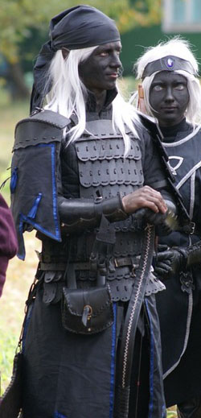

Личная страница Ксандра
Статус: Лларар
Любимое оружие:
Samick Mind 50
История Ксандра
Ксандр был одним из многих дроу родившихся под звёздным небом королевства Вэльдрин.
В семье, где он вырос, к религиозному фанатизму относились весьма прохладно, но к Эилистрае отношение было тёплым, поскольку богиня дала возможность семье Ксандра вырваться из оков хаоса, и выйти на поверхность, где доступ к ресурсам был проще.
Многие из боевых традиций злых дроу в семье считали прогрессивными и старались максимально их придерживаться. Умение сражаться в ближнем бою в тяжёлых доспехах, считалось одним из самых главных и почётных в семье. Вековой опыт изготовления оружия и доспехов из редких металлов и умение придавать им слабые магические свойства ещё на стадии ковки были обязательны для всех мужчин и женщин семьи.
После выхода на поверхность, семья Ксандра организовала кузню в Вэлькине, и стала активно заниматься изготовлением разнообразных металлических изделий, которые были жизненно необходимы активно строящемуся молодому Королевству. Оружие и доспехи, изготовленные по традиционным технологиям семьи, были прекрасного качества, но слишком тяжёлыми и непривычными для лёгких и изящных эльфов, зато очень высоко ценились людьми и даже дварфами. Экспортируя людям свою кузнечно-оружейную продукцию, семья получала большие прибыли и могла себе позволить закупать редкие ресурсы для кузнечных экспериментов.
Магические таланты в семье были очень низкие и потому военные навыки оттачивались до степени рефлекса. Воспитанию нужных психологических качеств, также как и боевым навыкам, уделялось не меньше внимания. "Жалость к врагу - это смерть и позор!" и "Победа любой ценой!" были девизами дома в подземье, остались и в Вэльдрине, несмотря на смену мировоззрения и малочисленность после бегства на поверхность. Пристрастие к чёрной как агат одежде осталось традиционным ещё со времён подземной жизни, но дополнилось обилием серебряной вышивки.
Проведя детство и юность в обучении важнейшим навыкам и получив такую закалку, Ксандр всегда с радостью участвовал в любых военных походах. Ему было неважно против кого воевать, лишь бы в конфликт не ввязывались мирные темные эльфы Вэльдрина, и не пострадали интересы Королевства.
Будучи вооружён относительно тяжёлым оружием и руководствуясь семейным девизом, он убивал врагов стремительно и беспощадно, нанося жуткие повреждения и сильно уродуя тела противников.
После сражений он всегда разыскивал убитых им врагов и снимал с их тел любые ценности и оружие. За что другие воины дали ему прозвище Мародёр. Добрым дроу он напоминал ворона, прилетевшего на поле брани за поживой, ведь как можно было ковыряться в этих изуродованных останках?
Среди трофеев часто попадались небольшие но полезные артефакты, с которыми Ксандр проводил различные эксперименты. В результате он смог создал очень лёгкий и прочный доспех и невероятно мощный арбалет. Испытав их в бою, и убедившись в их высокой эффективности, он продолжил изготавливать новые прототипы, улучшая их защитные или атакующие свойства, чем занимается и по сей день.